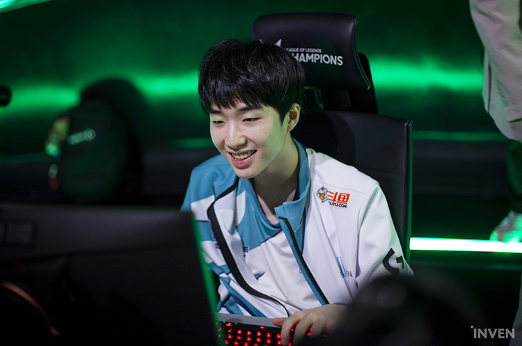

2세트에선 쑤닝이 제대로 반격했다. 마지막 픽으로 '빈'에게 쥐여준 피오라가 빛을 발했다. 또 다른 강수였던 '소프엠'의 렝가가 아무 재미도 보지 못하며 중반까지는 담원게이밍이 약간 앞서갔다. 그러나 무럭무럭 성장한 '빈'의 피오라가 사이드는 물론 한타에서도 맹활약하며 담원게이밍의 성벽을 무너뜨렸다. 결국 담원게이밍의 본진에서 나온 '빈' 피오라의 펜타 킬과 함께 2세트가 마무리됐다.
어김없이 혈전으로 진행된 3세트에선 '너구리' 장하권이 한 건 해냈다. 탑 집중 공략을 시작으로 담원게이밍이 긴 우위를 점했는데, 쑤닝이 담원게이밍의 섣부른 바론 트라이를 잡아먹으며 글로벌 골드 추격에 성공했다. 팽팽한 전세 속에 '너구리'의 케넨이 '소드아트'의 알리스타를 집요하게 쫓아 킬을 만들며 순간적으로 균형이 무너졌다. 곧바로 바론 둥지로 달려가 한타를 유도한 담원게이밍이 쑤닝을 쓸어내고 단번에 승리를 거뒀다.